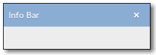

Gtk.InfoBar¶
Example¶

- Subclasses:
None
Methods¶
- Inherited:
Gtk.Box (14), Gtk.Container (35), Gtk.Widget (278), GObject.Object (37), Gtk.Buildable (10), Gtk.Orientable (2)
- Structs:
Gtk.ContainerClass (5), Gtk.WidgetClass (12), GObject.ObjectClass (5)
class |
|
|
|
|
|
|
|
|
|
|
|
|
|
|
|
|
|
|
Virtual Methods¶
|
|
|
Properties¶
- Inherited:
Gtk.Box (3), Gtk.Container (3), Gtk.Widget (39), Gtk.Orientable (1)
Name |
Type |
Flags |
Short Description |
|---|---|---|---|
r/w/c/en |
The type of message |
||
r/w/en |
Controls whether the action bar shows its contents or not |
||
r/w/c/en |
Whether to include a standard close button |
Child Properties¶
- Inherited:
Style Properties¶
- Inherited:
Name |
Type |
Default |
Flags |
Short Description |
|---|---|---|---|---|
|
|
d/r |
Width of border around the action area |
|
|
|
d/r |
Spacing between buttons |
|
|
|
d/r |
Width of border around the content area |
|
|
|
d/r |
Spacing between elements of the area |
Signals¶
- Inherited:
Name |
Short Description |
|---|---|
The |
|
Emitted when an action widget is clicked or the application programmer calls |
Fields¶
- Inherited:
Name |
Type |
Access |
Description |
|---|---|---|---|
parent |
r |
Class Details¶
- class Gtk.InfoBar(*args, **kwargs)¶
- Bases:
- Abstract:
No
- Structure:
Gtk.InfoBaris a widget that can be used to show messages to the user without showing a dialog. It is often temporarily shown at the top or bottom of a document. In contrast toGtk.Dialog, which has a action area at the bottom,Gtk.InfoBarhas an action area at the side.The API of
Gtk.InfoBaris very similar toGtk.Dialog, allowing you to add buttons to the action area withGtk.InfoBar.add_button() or gtk_info_bar_new_with_buttons(). The sensitivity of action widgets can be controlled withGtk.InfoBar.set_response_sensitive(). To add widgets to the main content area of aGtk.InfoBar, useGtk.InfoBar.get_content_area() and add your widgets to the container.Similar to
Gtk.MessageDialog, the contents of aGtk.InfoBarcan by classified as error message, warning, informational message, etc, by usingGtk.InfoBar.set_message_type(). GTK+ may use the message type to determine how the message is displayed.A simple example for using a
Gtk.InfoBar:GtkWidget *widget, *message_label, *content_area; GtkWidget *grid; GtkInfoBar *bar; // set up info bar widget = gtk_info_bar_new (); bar = GTK_INFO_BAR (widget); grid = gtk_grid_new (); gtk_widget_set_no_show_all (widget, TRUE); message_label = gtk_label_new (""); content_area = gtk_info_bar_get_content_area (bar); gtk_container_add (GTK_CONTAINER (content_area), message_label); gtk_info_bar_add_button (bar, _("_OK"), GTK_RESPONSE_OK); g_signal_connect (bar, "response", G_CALLBACK (gtk_widget_hide), NULL); gtk_grid_attach (GTK_GRID (grid), widget, 0, 2, 1, 1); // ... // show an error message gtk_label_set_text (GTK_LABEL (message_label), "An error occurred!"); gtk_info_bar_set_message_type (bar, GTK_MESSAGE_ERROR); gtk_widget_show (bar);
The
Gtk.InfoBarimplementation of theGtk.Buildableinterface exposes the content area and action area as internal children with the names “content_area” and “action_area”.Gtk.InfoBarsupports a custom<action-widgets>element, which can contain multiple<action-widget>elements. The “response” attribute specifies a numeric response, and the content of the element is the id of widget (which should be a child of the dialogs action_area).- CSS nodes
Gtk.InfoBarhas a single CSS node with name infobar. The node may get one of the style classes .info, .warning, .error or .question, depending on the message type.- classmethod new()[source]¶
- Returns:
a new
Gtk.InfoBarobject- Return type:
Creates a new
Gtk.InfoBarobject.Added in version 2.18.
- add_action_widget(child, response_id)[source]¶
- Parameters:
child (
Gtk.Widget) – an activatable widgetresponse_id (
int) – response ID for child
Add an activatable widget to the action area of a
Gtk.InfoBar, connecting a signal handler that will emit theGtk.InfoBar::responsesignal on the message area when the widget is activated. The widget is appended to the end of the message areas action area.Added in version 2.18.
- add_button(button_text, response_id)[source]¶
- Parameters:
- Returns:
the
Gtk.Buttonwidget that was added- Return type:
Adds a button with the given text and sets things up so that clicking the button will emit the “response” signal with the given response_id. The button is appended to the end of the info bars’s action area. The button widget is returned, but usually you don’t need it.
Added in version 2.18.
- get_action_area()[source]¶
- Returns:
the action area
- Return type:
Returns the action area of self.
Added in version 2.18.
- get_content_area()[source]¶
- Returns:
the content area
- Return type:
Returns the content area of self.
Added in version 2.18.
- get_message_type()[source]¶
- Returns:
the message type of the message area.
- Return type:
Returns the message type of the message area.
Added in version 2.18.
- get_revealed()[source]¶
- Returns:
the current value of the
Gtk.InfoBar:revealedproperty.- Return type:
Added in version 3.22.29.
- get_show_close_button()[source]¶
-
Returns whether the widget will display a standard close button.
Added in version 3.10.
- response(response_id)[source]¶
- Parameters:
response_id (
int) – a response ID
Emits the “response” signal with the given response_id.
Added in version 2.18.
- set_default_response(response_id)[source]¶
- Parameters:
response_id (
int) – a response ID
Sets the last widget in the info bar’s action area with the given response_id as the default widget for the dialog. Pressing “Enter” normally activates the default widget.
Note that this function currently requires self to be added to a widget hierarchy.
Added in version 2.18.
- set_message_type(message_type)[source]¶
- Parameters:
message_type (
Gtk.MessageType) – aGtk.MessageType
Sets the message type of the message area.
GTK+ uses this type to determine how the message is displayed.
Added in version 2.18.
- set_response_sensitive(response_id, setting)[source]¶
-
Calls
Gtk.Widget.set_sensitive(widget, setting) for each widget in the info bars’s action area with the given response_id. A convenient way to sensitize/desensitize dialog buttons.Added in version 2.18.
- set_revealed(revealed)[source]¶
- Parameters:
revealed (
bool) – The new value of the property
Sets the
Gtk.InfoBar:revealedproperty to revealed. This will cause self to show up with a slide-in transition.Note that this property does not automatically show self and thus won’t have any effect if it is invisible.
Added in version 3.22.29.
- set_show_close_button(setting)[source]¶
-
If true, a standard close button is shown. When clicked it emits the response
Gtk.ResponseType.CLOSE.Added in version 3.10.
- do_close() virtual¶
Signal Details¶
- Gtk.InfoBar.signals.close(info_bar)¶
- Signal Name:
close- Flags:
- Parameters:
info_bar (
Gtk.InfoBar) – The object which received the signal
The
::closesignal is akeybinding signalwhich gets emitted when the user uses a keybinding to dismiss the info bar.The default binding for this signal is the Escape key.
Added in version 2.18.
- Gtk.InfoBar.signals.response(info_bar, response_id)¶
- Signal Name:
response- Flags:
- Parameters:
info_bar (
Gtk.InfoBar) – The object which received the signalresponse_id (
int) – the response ID
Emitted when an action widget is clicked or the application programmer calls
Gtk.Dialog.response(). The response_id depends on which action widget was clicked.Added in version 2.18.
Property Details¶
- Gtk.InfoBar.props.message_type¶
- Name:
message-type- Type:
- Default Value:
- Flags:
The type of the message.
The type may be used to determine the appearance of the info bar.
Added in version 2.18.
- Gtk.InfoBar.props.revealed¶
- Name:
revealed- Type:
- Default Value:
- Flags:
Controls whether the action bar shows its contents or not